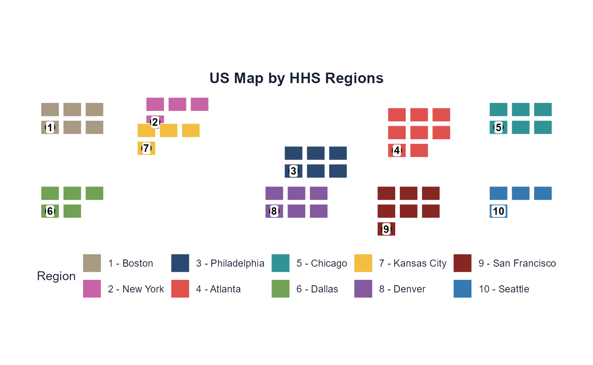
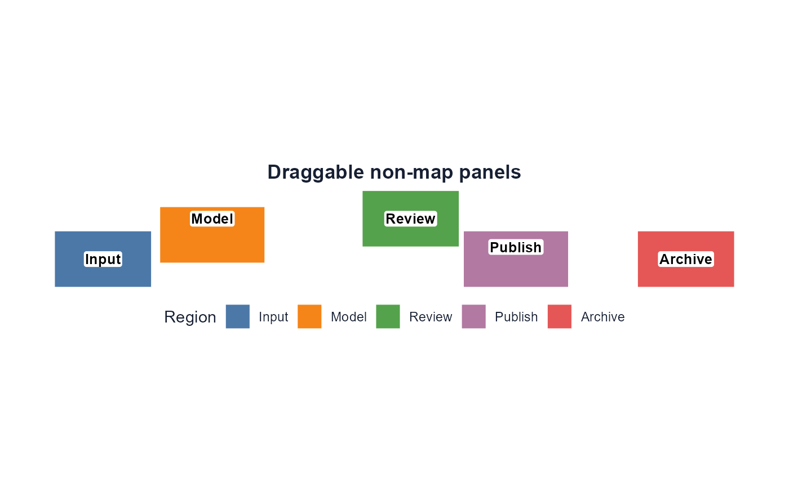
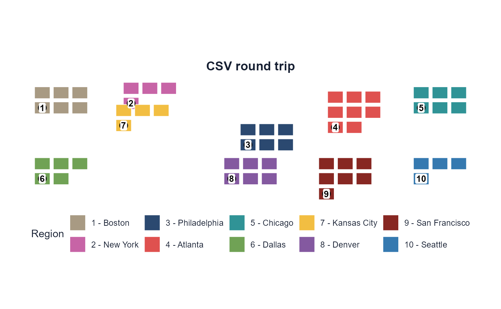
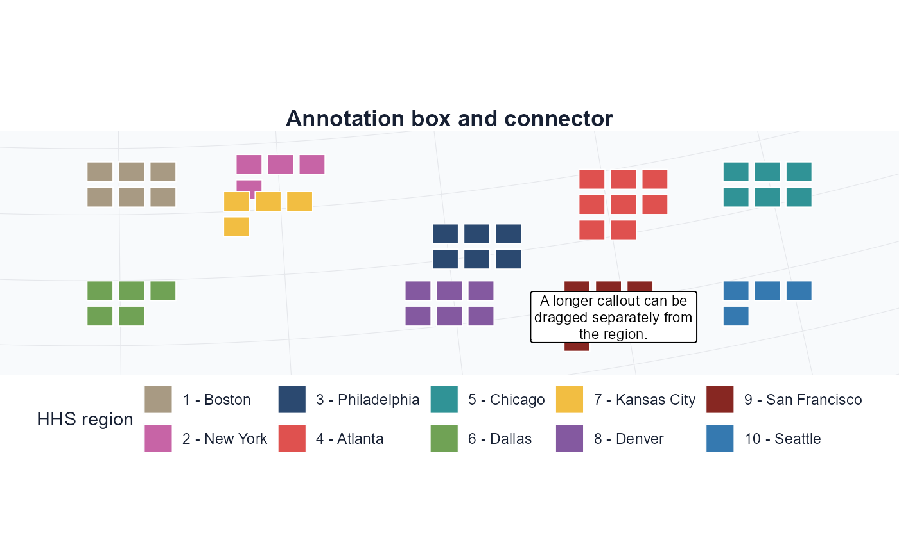
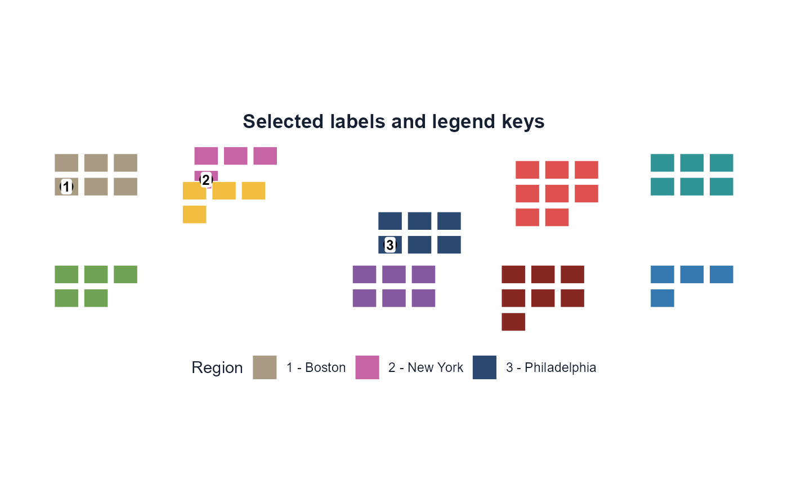
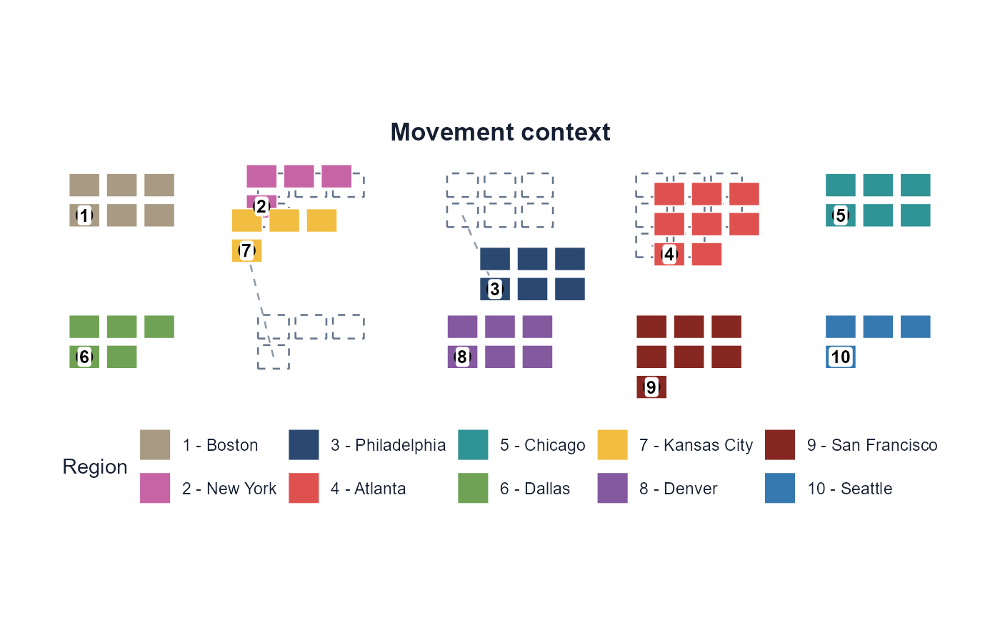

This gallery exists for two reasons: to show the range of draggable
plots that dragmapr can create, and to stress the package
with different geometry shapes before real projects depend on it.
Explodemap-style HHS Fixture
example_hhs_layout() bundles the small pieces needed
from the explodemap paper workflow: HHS membership, region names, region
colors, and the published display-offset CSV. The geometry itself is a
lightweight projected fixture.
library(dragmapr)
hhs <- example_hhs_layout()
render_dragged_map(
hhs$states,
region_offsets = hhs$region_offsets,
region_col = "hhs_region",
labels = hhs$labels,
label_offsets = hhs$label_offsets,
region_palette = hhs$region_colors,
region_labels = hhs$region_names,
title = "US Map by HHS Regions"
)
Non-map Panels
The same offset machinery works on any projected sf
geometry. This panel example treats rectangles as diagram or dashboard
cards.
panels <- example_panel_layout()
render_dragged_map(
panels$panels,
region_offsets = panels$region_offsets,
region_col = "group",
labels = panels$labels,
label_offsets = panels$label_offsets,
region_palette = panels$region_colors,
region_labels = panels$region_names,
title = "Draggable non-map panels"
)
CSV Round Trip
The key reproducibility test is that offsets can leave the browser as CSV and come back into R without hidden state.
tmp_regions <- tempfile(fileext = ".csv")
tmp_labels <- tempfile(fileext = ".csv")
utils::write.csv(hhs$region_offsets, tmp_regions, row.names = FALSE)
utils::write.csv(hhs$label_offsets, tmp_labels, row.names = FALSE)
render_dragged_map(
hhs$states,
region_offsets = tmp_regions,
region_col = "hhs_region",
labels = hhs$labels,
label_offsets = tmp_labels,
region_palette = hhs$region_colors,
region_labels = hhs$region_names,
title = "CSV round trip"
)
Labels, Boxes, And Connectors
This example exercises the newer annotation surface: an info box, a squiggle connector, thicker connector lines, and plot padding for static export.
note <- as_drag_annotations(data.frame(
label_id = "hhs-9-note",
region = "9",
label = "A longer callout can be dragged separately from the region.",
x = hhs$labels$x[hhs$labels$region == "9"],
y = hhs$labels$y[hhs$labels$region == "9"]
), width_px = 210, height_px = 88, connector = TRUE, connector_type = "squiggle")
render_dragged_map(
hhs$states,
region_offsets = hhs$region_offsets,
region_col = "hhs_region",
labels = note,
label_offsets = data.frame(
label_id = "hhs-9-note",
region = "9",
dx_m = 120000,
dy_m = 80000
),
region_palette = hhs$region_colors,
region_labels = hhs$region_names,
connector_linewidth = 1,
connector_linetype = "dashed",
connector_endpoint = "arrow",
legend_title = "HHS region",
map_background = "light_grid",
label_padding = 0.12,
title = "Annotation box and connector"
)
Selected Labels And Legend Keys
Selection filters are render-time controls. They hide selected labels or legend keys without deleting offset rows or changing the source geometry.
render_dragged_map(
hhs$states,
region_offsets = hhs$region_offsets,
region_col = "hhs_region",
labels = hhs$labels,
label_offsets = hhs$label_offsets,
region_palette = hhs$region_colors,
region_labels = hhs$region_names,
label_values = c("1", "2", "3"),
legend_values = c("1", "2", "3"),
title = "Selected labels and legend keys"
)
Movement Context
Origin outlines and movement connectors can explain how the layout changed from the original geography. They are optional and off by default.
render_dragged_map(
hhs$states,
region_offsets = hhs$region_offsets,
region_col = "hhs_region",
labels = hhs$labels,
label_offsets = hhs$label_offsets,
region_palette = hhs$region_colors,
region_labels = hhs$region_names,
show_origin_outlines = TRUE,
show_movement_connectors = TRUE,
movement_connector_linetype = "dashed",
movement_connector_endpoint = "closed",
title = "Movement context"
)
Shiny
Several Shiny examples are bundled but not evaluated in this vignette because they launch interactive apps:
if (interactive()) {
shiny::runApp(system.file("examples", "shiny_draggable_plot.R", package = "dragmapr"))
shiny::runApp(system.file("examples", "shiny_custom_labels.R", package = "dragmapr"))
shiny::runApp(system.file("examples", "shiny_draggable_export.R", package = "dragmapr"))
shiny::runApp(system.file("examples", "shiny_spatial_studio.R", package = "dragmapr"))
shiny::runApp(system.file("examples", "shiny_static_export.R", package = "dragmapr"))
}shiny_draggable_export.R demonstrates a common app
pattern: users drag the interactive plot inside Shiny, the helper sends
region and label state back to the parent app, and the app can export a
PNG for a report or document. It also shows toggles for labels, legends,
marker shapes (circle, rounded box, text only), info-box dimensions,
connector style, connector color, connector line pattern, arrow
endpoints, connector thickness, and movement context.
shiny_spatial_studio.R is the general spatial workspace.
It accepts local polygon uploads, including zipped shapefiles, GeoJSON,
and GeoPackage files, then lets users choose grouping/label columns,
colors, annotation style (short labels or info boxes), text size,
connector style, connector line pattern, smart connectors, legend
visibility/title, multiselect legend and label filters, movement
context, map background, and export formats. Region groups are sorted in
natural numeric order throughout the sidebar, the legend, and the
exported CSVs.